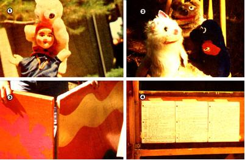
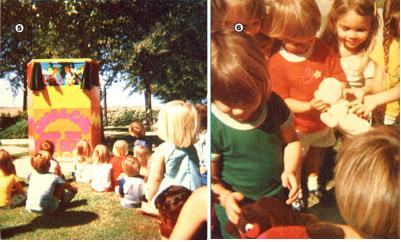

If you get along well with children and like to perform in front of people, a traveling puppet theater can be a rewarding part-time business ... and one that doesn't demand a big initial investment! In fact, once you acquire the basic equipment, your only expenses will be transportation and advertising. And, believe me, many parents are d elighted to pay good money to have some terrific entertainment at their children's special parties.
In addition, the thrill of putting on a show can be every bit as rewarding as the cash you'll make! Most children are familiar with puppets through television, but not very many young people have ever seen a live performance of this traditional drama form ... and they'll love it!
Naturally, it takes some time to develop all the skills a puppetmaster requires. And-in addition to putting on the actual performances-you'll have to write the script, acquire a stock of puppets, build a stage, and ad as your own booking agent and driver.
If it's been a while since you've attended a children's party, try to wangle an invitation to one (surely you know a parent who could use the help!) and observe the action. This sort of firsthand experience is probably the only way to find out what you-as a puppeteer-may be in for! Then, if you're still interested in entertaining a pack of young'uns, consider the local market: Are there many children in your area? Are their parents affluent enough to hire entertainment? Do other performers operate locally, and are any of these potential competitors puppeteers?
Should the market seem favorable, your next step will be to check the local library for books on the art of puppetry. I would recommend Tom Tichenor's Puppets by Tom Tichenor (Abingdon, 1971, $6.95), Making Puppets Come Alive by Larry Engler and Carol Fijan (Taplinger 1973, $9.95), and Hand Puppets: How to Make and Use Them by Laura Ross (Lathrop, 1969, $5.94 or paperback $2.95).
Of course, real puppetmasters can give you more information than will be found in any number of books, so watch as many live and televised shows as you can . and study the puppets used in those acts to see which types appeal to you.
"Hand dolls" are the easiest "manikins" to manipulate and are usually the choice of puppeteers who put on one-person shows. Since one of these little actors will fit on each hand, you'll be ate to let two puppets interact onstage. As a general rule, beginners should avoid marionettes ... they're trickier to use and require an operator for each character.
When you watch live shows, observe how the puppets move and - especially - how they respond to each other and to the audience. Study the children's reactions, and-if you can-get a look at the performers' backstage techniques as well as how the puppets and props are arranged. Also, pay attention to the different types of stages so you can decide which style will work best for you.
A stage-which will be your major investment-is critical to the success of your business. The "showplace" must be attractive and colorful. It should set the scene for the audience, show off the puppets, conceal the operator, and be comfortable. In fact, the height of the stage opening should be sized to your dimensions, so-whether you stand or sit-you won't have to constantly reach up or scrunch down.
Also, the stage must be designed in such a way as to assure easy transportation and setup. (My "box"-which is shown in the photos that accompany this article-can be hooked together in about three minutes.) It should be light enough to carry, heavy enough to be stable, big enough to hide you, and small enough to fit into your car. (Puppetry books often feature useful stage plans, but you'll probably want to modify a design to fit your own special needs.)
A traveling puppeteer can ignore such details as lights, multiple backdrop scenes, and must. One person can't set up and operate these accouterments, and-if you're really good-such trimmings won't even be missed by your audiences. Puppets, a few props, and an all purpose scenic backdrop are all that's needed to fire most children's active imaginations.
Many beginning puppetmasters underestimate the importance of the script. But even great puppets can flop in a blah story. Besides, it's easier to fit puppets to a play than to write a play around puppets.
Keep in mind that your audience-which will be made up of boys and girls between the ages of two and ten-will demand lively entertainment. Many of these children have been conditioned, by television, to expect a lot of action and jokes. However-even though they'll compare you to their usual TV fare-you are a live entertainer and that fact alone gives you a big advantage over canned shows. Your puppets can invite the audience to respond to the dialogue of the story and become a part of the action, for instance. Youngsters love to talk to puppets, and they're even happier when the "dolls" speak to them. When children are allommd to participate in the program, they're not likely to become bored.
Don't count on using scripts from puppet books. Most of these dramas are too wordy and complicated for young tastes. You need fast-moving, simple plots ... with brief dialogues and not more than two characters onstage at once. Action is vital, but it doesn't have to be the violent action of a Punch and Judy show.
To find good stories, visit the children's department of your local library. Browse through the picture books and look for simple plots that you can expand into plays. Since your end product will barely resemble the book that inspired it, don't feel as if you're plagiarizing. You'll usually have to alter the story a lot to make it more dramatic, and it may also be necessary to change the characters to fit your puppets. Look, too, through folklore and fairy-tale collections. Young children enjoy familiar stories like "Little Red Riding Hood", "The Frog Prince", and "The Tortoise and the Hare".
If you're an especially creative person, you may want to write your own plays. The classic dilemma plot is a sure winner: Someone bad (such as a witch, monster, or wolf) wants to do something dreadful to someone else, which leads to a crisis that the heroine) can solve. (I like nonsexist stories) The audience should join in to help the good guy/gal ... or, sometimes, even the villain!
Aim different shows at various age groups. Preschoolers have a short attention span and appreciate simple fairy-tale plots with broad action, while "older" audiences may want a bit more humor and word play. However, you'll find that some stories are popular with any age group ... including adults.
A good length for a puppet play is 10 to 15 minutes and a two-play, half-hour show will generally be long enough for both audience and performer. Always leave your young fans begging for more ... and you'll be rehired again soon!
It's best to write your scripts for no more than six characters. So-if you plan to start with two plays-you'll need from six to ten puppets. Then, as you expand your repertoire, you can add more actors to your stable.
Hand puppets suitable for a one-person show come in two styles: the glove puppet (two fingers and thumb operate the head and arms) and the movable-mouth style (fingers and thumb operate the upper and lower jaws).
As a professional, you must present quality puppets, so be prepared to spend from $5.00 to $15-00 per performer. Toy stores are the obvious places to search for your cast. You might also try drugstores, bookstores, craft shops, craft fairs, and gift shops. But, before you buy, be sure to ask yourself the following questions: Can the "new" character be used in the plays you've worked up, or will it need a new story? Is the puppet about the same size as the rest of your troupe? (Don't buy a mouse larger than your lion!) Is it well constructed and, most important, is the "toy" worth the price?
If you need a puppet you can't locate, maybe you can make it yourself! Simplicity Pattern No. 8365 fea tures four movable mouth-style animals-which can be modified into different characters-and the book, Felt Toy Making by Amy Van Gelder (Drake Publishers, 1974, $9.95), has patterns for more complex creatures.
Play with your puppets until you're able to manipulate them with ease, and work alone while you get used to the craft. (At this point in your new career, you don't need to hear jokes about second childhood!) The best way to learn technique is to perform the basic functions-bow, wave, walk, jump, pick up an object, etc.in front of a mirror with each little actor or actress ... to see if it looks alive. Be sure to hold your characters erect. lf you rest your wrists on the stage, your puppets will lack action ... but don't hold them so high that you display your naked arms.
When two puppets are onstage together, they should be able to shake hands, dance, kiss, fight, and, so on. And two characters in conversation must look at each other. The "speaker" should move his or her body and/or mouth so the audience knows who's talking. The "listener" should stand quietly yet alertly. As you work on puppet conversations, try to create a distinctive voice for each character
Once you're able to handle the puppets comfortably, you can begin rehearsing a play. Each drama will have several tricky "switches"-such as when one puppet exits and another enters-and you should practice these transitions many times: While a lone puppet is speaking onstage, remove the character who just left and wriggle your hand into another Be sure to glance down to make sure you haven't put the new one on backward ... if you have trouble, you can always use your teeth!
Of course, sooner or later you'll have to "try out" your show in front of people, because there's nothing like the pressure of an audience to bring out any weak points in a performance. For your premiere, arrange a foolproof situation ... such as a preschool or library story time. A small group of not more than 20 of these young children will appreciate whatever you do, and they'll be under adult control, so the young'uns won't be too rowdy.
Before your public performance, rehearse the show several times. Don't try to memorize your script completely. Instead, hang it up in front of you so you'll be able to refer to the lines during the show. But, try to watch the action as much as you can, because it's easy to let the puppets "collapse" while you read a few sentences of dialogue.
In addition to the play itselt be sum to work out routines to introduce and close the show. A host puppet should open the curtains to announce the first story, and then appear at the end to introduce the second play or a short intermission.
Plan to arrive at your first showing at least 30 minutes early ... so you can set up the stage, arrange the puppets and props, and compose yourself before the audience arrives.
Ask the teacher (or whatever adult is in charge) to supervise the seating. If chairs are used, make sure they're spaced so that everyone has a view of the stage opening ... and children who sit on the floor shouldn't be so close that they must bend their necks back to see. When everyone's ready, disappear behind the stage and wait for complete attention before you go into your act.
Audience reaction will surprise you every time! At first, young children are usually shy to respond, so have your puppets coax them-by repetition-into answering easy questions. After a few minutes, a typical group will chatter replies and comments, and then the screamers will start! At ON point you'll be glad you began with a small group ... even a few preschoolers can overwhelm you with their racket! Just remember that-when they yell in response-your young viewers are definitely enjoying the show. If you don't hear them, they're not listening.
You probably won't have any problems with your first appearance under adult-suspended conditions. Forget stage fright ... your audience won't be that critical of the show. If you lose your place in the script, simply ad lib and keep the puppets active ... or bring them offstage and find your place again. Should an object fall off We stage, a puppet can ask, "Could someone please give that back to me?" The children will be delighted! If you cough, sneeze, or your voice croaks ... make it a part of the action. Whatever you do, don't break the spell!
At the end of the fantasy, emerge and take your bows. (Many children will be amazed that you were the only person back there!) Bring two of your "stars" with you and invite the youngsters to shake their hands and pet them. Some tots, however, may be hesitant to touch a puppet, since they may think it's alive. Allow a timid child to approach at his or her own pace.
Your first experience will probably exhilarate you, but be ready to go over the performance for faults. If the audience sounded restless in places, you probably need to add more action and cut the dialogue. (Ask the teacher for an opinion, as he or she is often-by necessity-an expert on what entertains children.)
You would be well advised to give several "free" shows at schools or libraries and at home until you're confident of your technique, repertoire, and rapport with the audience. Then, when you know you can perform in a strange situation, you'll be ready to launch yourself as a professional puppetmaster.
Set your fee in line with local income levels and competing entertainers. You could start low ($10 to $15 for a half hour) and increase your price as you improve and acquire a reputation. The top payment for a one-person, half-hour show is usually about $30. (That works out to a dollar a minute!) Also, you can avoid a lot of problems by setting geographical limits to your territory, and-when you're asked to drive farther-charging extra for your time and transportation.
Advertisements in the local paper can be counted on to bring job offers, as can store bulletin board pinups and posters in toy or hobby shops. Don't overlook telling your friends about your shows, either:
Word of mouth is one of the best ways to advertise this sort of business. Also, hand out business cards-bearing your stage name and phone number-at every performance.
When folks call to book your act, describe exactly what you're offering for what precise fee, and then ask them about the party. You'll want to know the date and time, how many children (of what ages and sexes) will attend, whether the show will be held inside or out, and so forth. Always get directions to the house and parking information, and note the parent's name and number . . SO You can call to confirm, the booking a day or two before the actual event.
Most children's parties are held on Saturday afternoons during the school year. (You may also be hired for neighborhood get-togethers and slumber parties.) Two shows a day will be about all you'll want to tackle (unless an assistant can help you ... in which case you could probably s chedule three).
Arrive at least 15 minutes before showtime and park as close to the house as possible. Then locate your customer, introduce yourself, and find out where to "set up shop". Always assemble the stage first, and bring in your actors (concealed in a bag or suitcase) last. The puppets shouldn't be seen by your audience until the performance starts.
A children's party can sometimes get a little out of control, but-as a friendly puppeteer-you'll be expected to smile and be personable even when the youngsters pester you. Shoo the guests away while you organize your equipment (a simple statement like "The puppets have to get ready now" will often work wonders).
Try to have a parent or other adult seat the partygoers. But be prepared for an unsupervised audience ... if the grownups leave the area, the children may get rowdy! Position your stage against a wall, so antics such as stage-rushing and puppet-grabbing will occur from the front. The puppet onstage should always ask troublemakers to please sit down. Usually, the rest of the audience can be appealed to for help. If you can't quell a heckler, stop the show and don't resume until he quiets down. Stay cool under all circumstances. Remember, if you can handle an undisciplined group, you're a real pro!
After the play, it's a nice touch to arrange for the host puppet to call each child's name and hand out party favors (provided by the parent) from the stage. You'll have to stretch low to do this, and use a puppet that covers your arm almost to the elbow, but the tykes will love it!
When the show's over, emerge with the puppets and bid farewell. Once everyone has had a chance to pet (or maul) the performers, dismantle your stage and collect your fee from the client.
After a few parties, you'll find you can entertain the small fry in spite of any problems. And don't think you'll ever become bored with this business, because every audience will be different and delightful!
Who knows, maybe puppeteering is an occupation for someone in his or her "second childhood", but it sure is fun ... and it pays!
|
[1] Starting your own puppet troupe means ? first of all ? having a collection of the ""little folk"". These are two of my favorite hand puppets, but . . . [2] you may also want to procure several ""mouth"" puppets to add variety to your shows. [3] The stage should be attractive and colorful, and designed for easy assembly and disassembly. It should also be sized to your dimensions, so you'll be comfortable when you sit or stand inside it. [4] Don't try to memorize an entire play. Instead, attach your script to the wall just in front of you ... below the stage floor. Keep one eye on the script and the others on the characters. [5] Once you get your business down pat, you'll enjoy entertaining these young audiences ... and the children will be so enthralled they may think your ""actors"" are real! [6] After the show, the youthful viewers will be delighted by a chance to meet the ""cast"". |
 |
 |